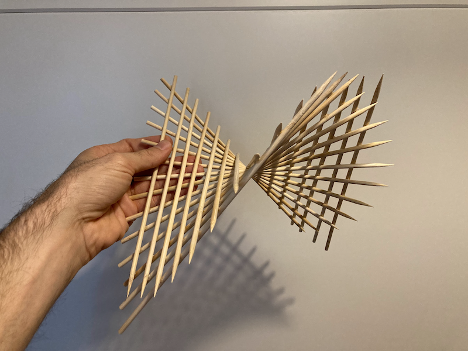

Parabolic Hyperboloid

Just like the hyperboloid of one sheet, the Parabolic Hyperboloid is a ruled surface. This means that it can be imagined as the surface one gets by swiping a straight line through space. In the image below, we see that each of the skewers is exactly straight, but together thay make this beautiful curved shape.

This project is quite easy to make with skewers, see its instructions here.
The equation that defines the surface of the parabolic hyperboloid is
\[ z = Ax^2 - By^2, \]
where both \(A\) and \(B\) are positive numbers. This website allows us to play with the parameters and see how the surface responds.
In my opinion, a static image can’t convey the beauty of this shape, so I made this gif:
In 2020, Dillon Berger noted on Twitter that the shape of Pringles is a parabolic hyperboloid:
The reason Pringles fit so nicely in a cylindrical tube is because they're hyperbolic paraboloids plotted over a circular domain pic.twitter.com/BUzjPw7e17
— 〈 Berger | Dillon 〉 (@InertialObservr) February 18, 2020
The company took notice of this (mildly) viral tweet, and sent Dillon a box full of parabolic hyperboloids 😁.
Thanks @Pringles, for sending me some of these delicious Hyperbolic Paraboloids! pic.twitter.com/L3WMgqObPM
— 〈 Berger | Dillon 〉 (@InertialObservr) March 2, 2020
The lesson here is that it’s good to know your math 😜.